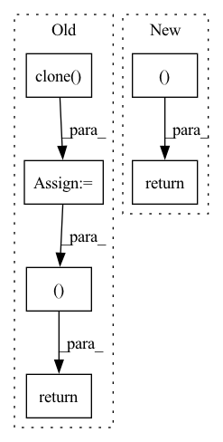

Pattern ID :39010
Before Change
// for pymaf
img = img_np.astype(np.float32) / 255.
img = torch.from_numpy(img).permute(2, 0, 1)
img_norm = image_to_pymaf_tensor(img.clone() )[None]
return img_tensor, img_norm, img_np
def process_image_naive(img_file, input_res=512):
Read image, do preprocessing and possibly crop it according to the bounding box.After Change
"crop_shape": img_for_crop.shape,
"M": M}
return img_tensor, img_hps, img_ori, img_mask, uncrop_param
def get_transform(center, scale, res):
Generate transformation matrix.In pattern: SUPERPATTERN
Frequency: 5
Non-data size: 6
Instances Fragment ID: 111154864
Project Name: yuliangxiu/icon
Commit Name: 0198e25265de836a9b0c79b017afa7fb5edcb56a
Time: 2022-02-13
Author: yuliang.xiu@tuebingen.mpg.de
File Name: lib/pymaf/utils/imutils.py
M Class Name: AnonimousClass
N Class Name: AnonimousClass
M Method Name: process_image(3)
N Method Name: process_image(3)
M Parent Class:
N Parent Class:
M File Name: lib/pymaf/utils/imutils.py
N File Name: lib/pymaf/utils/imutils.py
M Start Line: 54
M End Line: 117
N Start Line: 78
N End Line: 135
Before Change
self.node_dropout,
self.norm_adj_matrix._nnz()) if self.node_dropout != 0 else self.norm_adj_matrix
features = self.get_feature_matrix()
finalEmbd = [features.clone() ]
for gnn in self.GNNlayers:
features = gnn(A_hat, self.eye_matrix, features)
features = nn.LeakyReLU(negative_slope=0.2)(features)
features = nn.Dropout(self.message_dropout)(features)
features = F.normalize(features, p=2, dim=1)
finalEmbd += [features.clone()]
finalEmbd = torch.cat(finalEmbd, dim=1)
u_g_embeddings = finalEmbd[:self.n_users, :]
i_g_embeddings = finalEmbd[self.n_users:, :]
return u_g_embeddings, i_g_embeddings
def calculate_loss(self, interaction):
if self.restore_user_e is not None or self.restore_item_e is not None:
self.restore_user_e, self.restore_item_e = None, NoneAfter Change
user_all_embeddings, item_all_embeddings = torch.split(ngcf_all_embeddings, [self.n_users, self.n_items])
return user_all_embeddings, item_all_embeddings
def calculate_loss(self, interaction):
if self.restore_user_e is not None or self.restore_item_e is not None:
self.restore_user_e, self.restore_item_e = None, None Fragment ID: 111154860
Project Name: rucaibox/recbole
Commit Name: 210deb20fdbedae80baa4e808ed08326a696027f
Time: 2020-09-12
Author: 2015201909@ruc.edu.cn
File Name: recbox/model/general_recommender/ngcf.py
M Class Name: NGCF
N Class Name: NGCF
M Method Name: forward(1)
N Method Name: forward(1)
M Parent Class: GeneralRecommender
N Parent Class: GeneralRecommender
M File Name: recbox/model/general_recommender/ngcf.py
N File Name: recbox/model/general_recommender/ngcf.py
M Start Line: 115
M End Line: 131
N Start Line: 111
N End Line: 123
Before Change
m, x_rnn, _ = self.erb_stage(feat_erb)
spec = self.mask(spec, m, atten_lim) // [B, 1, T, F, 2]
lsnr, _ = self.lsnr_net(x_rnn)
out_specs = [spec.squeeze(1).clone() for _ in range(len(self.refinement_stages) + 1)]
// re/im into channel axis
spec_f = (
spec.squeeze(1)[:, :, : self.df_bins].permute(0, 3, 1, 2).clone()
) // [B, 2, T, F_df]
h_conv: Optional[Tensor] = None
for i, (stage, _) in enumerate(zip(self.refinement_stages, self.refinement_snr_max)):
refinement, h_conv, _ = stage(self.cplx_comp(spec_f), h_conv)
spec_f = spec_f + refinement
out_specs[i + 1][..., : self.df_bins, :] = spec_f.permute(0, 2, 3, 1)
spec[..., : self.df_bins, :] = spec_f.unsqueeze(-1).transpose(1, -1)
return spec, m, lsnr, out_specs
def init_model(df_state: Optional[DF] = None, run_df: bool = True, train_mask: bool = True):
assert run_df and train_maskAfter Change
r, _, _ = self.refinement_stage(self.cplx_comp(spec_f))
spec_f = self.refinement_op(spec_f, r)
spec[..., : self.df_bins, :] = spec_f.unsqueeze(-1).transpose(1, -1)
return spec, m, lsnr, None
def init_model(df_state: Optional[DF] = None, run_df: bool = True, train_mask: bool = True):
assert run_df and train_mask Fragment ID: 111154861
Project Name: rikorose/deepfilternet
Commit Name: 946b362aa406f8a1808a252393351d0e7523130a
Time: 2022-04-12
Author: h.schroeter@pm.me
File Name: DeepFilterNet/df/multistagenet.py
M Class Name: MSNet
N Class Name: MSNet
M Method Name: forward(3)
N Method Name: forward(3)
M Parent Class: nn.Module
N Parent Class: nn.Module
M File Name: DeepFilterNet/df/multistagenet.py
N File Name: DeepFilterNet/df/multistagenet.py
M Start Line: 534
M End Line: 547
N Start Line: 504
N End Line: 510
Before Change
**Returns:**<br>
`(loc,)`: tuple with tensors of Poisson distribution arguments.<br>
rate_pos = F.softplus(input).clone()
return (rate_pos.squeeze(-1)After Change
**Returns:**<br>
`(rate,)`: tuple with tensors of Poisson distribution arguments.<br>
return (input.squeeze(-1) Fragment ID: 111154862
Project Name: nixtla/neuralforecast
Commit Name: db856ea0c14b68df5b7d58f085381d2a0d9ac886
Time: 2023-01-13
Author: kin.gtz.olivares@gmail.com
File Name: neuralforecast/losses/pytorch.py
M Class Name: AnonimousClass
N Class Name: AnonimousClass
M Method Name: poisson_domain_map(1)
N Method Name: poisson_domain_map(1)
M Parent Class:
N Parent Class:
M File Name: neuralforecast/losses/pytorch.py
N File Name: neuralforecast/losses/pytorch.py
M Start Line: 685
M End Line: 686
N Start Line: 711
N End Line: 711
Before Change
// ----------------------------------------------------------------------------------------- //
param = init_value.clone()
param.requires_grad = True
_input = self.transform_func(param)
if "start" in output:
self.output_info(_input=_input, mode="start", loss_fn=loss_fn, **kwargs)
if iteration == 0:
return _input, None
optimizer: optim.Optimizer = self.optim_type(parameters=param)
lr_scheduler = optim.lr_scheduler.StepLR(optimizer, step_size=self.step_size) if self.lr_scheduler else None
optimizer.zero_grad()
// ----------------------------------------------------------------------------------------- //
for _iter in range(iteration):
if self.early_stop_check(_input, loss_fn=loss_fn, **kwargs):
if "end" in output:
self.output_info(_input=_input, mode="end", loss_fn=loss_fn, **kwargs)
return _input, _iter + 1
loss = loss_fn(_input)
loss.backward()
optimizer.zero_grad()
_input = self.transform_func(param)
if lr_scheduler:
lr_scheduler.step()
if "middle" in output:
self.output_info(_input=_input, mode="middle",
_iter=_iter, iteration=iteration, loss_fn=loss_fn, **kwargs)
if "end" in output:
self.output_info(_input=_input, mode="end", loss_fn=loss_fn, **kwargs)
return _input, None
def transform_func(self, x: torch.Tensor) -> torch.Tensor:
if isinstance(self.input_transform, str):
if self.input_transform == "tanh":After Change
_iter=_iter, iteration=iteration, loss_fn=loss_fn, **kwargs)
if "end" in output:
self.output_info(real_params=real_params, mode="end", loss_fn=loss_fn, **kwargs)
return real_params, None
def transform_func(self, x: torch.Tensor) -> torch.Tensor:
if isinstance(self.input_transform, str):
if self.input_transform == "tanh": Fragment ID: 111154863
Project Name: ain-soph/trojanzoo
Commit Name: 1684c28ef38502abb83d37beb845b69007e33274
Time: 2020-07-07
Author: ain-soph@live.com
File Name: trojanzoo/optim/uname.py
M Class Name: Uname
N Class Name: Uname
M Method Name: optimize(5)
N Method Name: optimize(5)
M Parent Class: Optimizer
N Parent Class: Optimizer
M File Name: trojanzoo/optim/uname.py
N File Name: trojanzoo/optim/uname.py
M Start Line: 49
M End Line: 78
N Start Line: 54
N End Line: 77